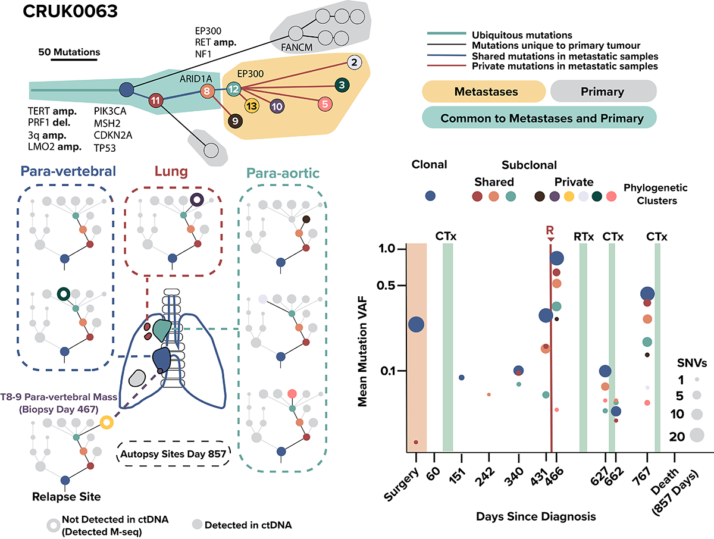

USER INTERFACE: Timer
This timer user interface uses intervals to display time. The user will set how long the timer will be and the intervals they'd like displayed. After each interval is completed, a ring will slowly fade in. This interface was created used Adobe InDesign.
Bioinformatics course design
This is a sample of the many designs created for a graduate Bioinformatics course at Tandon Online, NYU Tandon's online graduate program. Designs are usually created with guidance from course textbooks and lecture presentations provided by professors.
